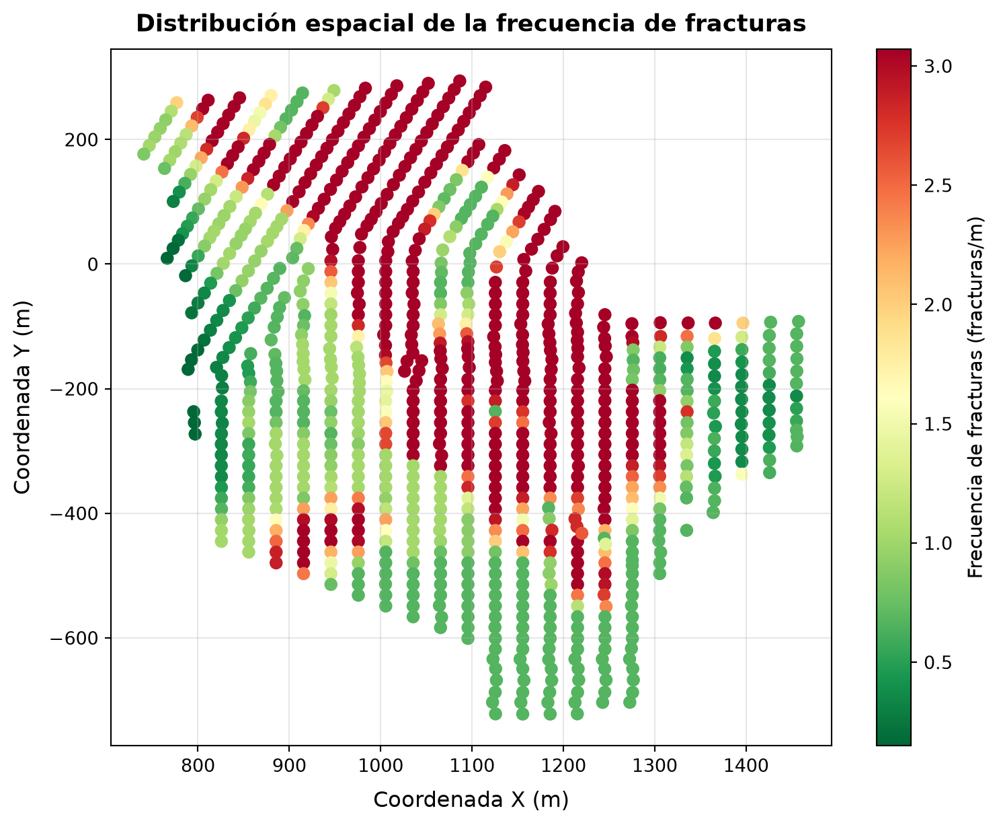

import pandas as pdManipulación de Series - Parte II
Métodos de conversión, manipulación e indexación avanzada
ImportantIdea central
En esta segunda parte seguiremos trabajando con series de Pandas, pero desplazando el foco desde su definición y sus primeras operaciones hacia tareas de manipulación más cotidianas: Convertir estructuras, transformar valores, tratar datos faltantes, acotar rangos, ordenar registros y controlar el índice como una pieza activa del análisis. La idea central es entender que una serie no sólo se resume o se compara: También se prepara, se limpia, se reorganiza y se deja lista para integrarse en flujos tabulares más amplios.
Pandas Series Conversión de tipos Transformación de valores Datos faltantes Ordenamiento Índices Muestreo Filtrado de datos
4.1 Introducción
En la entrada anterior estudiamos a las series como estructuras unidimensionales, etiquetadas y alineadas por índice. Revisamos su construcción, sus atributos principales, el alineamiento automático, operadores aritméticos y lógicos, métodos de agregación, estadígrafos base y algunos criterios iniciales para identificar valores atípicos. Con eso dejamos instalada la intuición más importante: En Pandas, una serie no es simplemente una lista con nombre, sino una estructura que combina valores, etiquetas, tipos de datos y métodos especializados.
En esta entrada avanzaremos hacia un uso más práctico de esa estructura. Primero revisaremos métodos de conversión que permiten mover una serie hacia otras representaciones, como arreglos, listas, diccionarios o DataFrames. Luego estudiaremos herramientas de manipulación directa, incluyendo apply(), el trabajo con datos faltantes, el uso de clip() para acotar valores y métodos de ordenamiento. Finalmente, nos concentraremos en operaciones asociadas al índice: Renombrar etiquetas, resetear índices, muestrear registros y filtrar información conforme a etiquetas o condiciones definidas sobre el índice.
El objetivo es construir fluidez. Muchas tareas reales de análisis no comienzan con modelos ni gráficos sofisticados, sino con una serie que necesita ser normalizada, corregida, filtrada o reordenada antes de volverse útil. Por eso, esta sección funciona como una caja de herramientas intermedia entre los fundamentos de las series y las operaciones más complejas que aparecerán cuando trabajemos con DataFrames completos.
4.2 Métodos de conversión o casting
En el mundo real, será común que trabajemos con datos no formateados, desordenados y que no siguen ninguna pauta de diseño mínima que, en equipos más constituidos de data & analytics, son ley. Muchos alumnos en práctica y memoristas que han llegado a trabajar a mi equipo quedan, en cierta medida, shockeados, cuando potenciales clientes levantan requerimientos asociados a un aparentemente simple reporte (“necesito un Power BI”) que será alimentado por planillas de Excel casi imposibles de leer sin construir funciones que busquen exactamente la fila y la columna en la cual parten las tablas, para que luego, arbitrariamente, esas tablas cambien de formato de la nada, generando lluvias de cambios en las rutinas que leen y limpian los datos y literalmente llenándonos de casos borde.
Para blindar nuestras rutinas, necesitaremos dominar métodos que permitan abordar aspectos asociados al formato de los datos, siendo esencial, en primera instancia, saber realizar conversiones de tipos. Esta habilidad no sólo ayuda a evitar errores silenciosos: También mejora la consistencia del análisis, facilita validaciones posteriores y puede impactar directamente en el rendimiento de las operaciones que hacemos sobre series.
4.2.1 Conversiones de tipos
Para realizar conversiones de tipos, podemos usar el método astype(), que nos permite convertir una serie a un tipo de dato específico. Para ejemplificar estas conversiones, haremos uso del archivo pillars_data.csv, que contiene información asociada a la caracterización de los pilares de un nivel de producción en una mina subterránea explotada mediante panel caving. El dataset incluye las siguientes columnas:
x,y,z: Coordenadas espaciales del pilar, referenciadas a un sistema de coordenadas local de tipo rectangular, respecto del centroide de cada uno (en el plano XY, medidas en metros).area: Área del pilar, medida en metros cuadrados.frec_fracturas: Frecuencia de fracturas observadas en el pilar, medida como el número de fracturas por metro lineal. Las fracturas son discontinuidades en la roca que pueden afectar la estabilidad del pilar y, en este caso, se consideran, como mínimo, vetillas blandas, fracturas abiertas, fracturas rellenas de material blando y fracturas rellenas de material duro.sigma_z: Carga vertical aplicada sobre el pilar, medida en megapascales (MPa). Esta carga representa la presión ejercida por el macizo rocoso sobre el eje longitudinal del pilar, y es un indicador clave para evaluar su estabilidad. Dicha carga representa un estado de pre-minería, y se ha estimado por medio de un modelo numérico de elementos finitos.tiraje_prom: Tiraje promedio del pilar, medido en toneladas cargadas por palas (LHDs) por unidad de altura del pilar. El tiraje es una medida de la cantidad de material que se extrae de los puntos de extracción ubicados en la periferia del pilar, y se utiliza como un indicador de la productividad del proceso de extracción. La altura del pilar, además, nos permite entender la cantidad de reservas de mineral que quedan por extraer, y es un factor importante para evaluar la eficiencia de la operación minera.
Para cargar el dataset, usaremos la función pd.read_csv():
# Cargamos el dataset.
pillars_df = pd.read_csv("datasets/pillars_data.csv")
# Visualizamos las primeras filas del DataFrame.
pillars_df.head()| x | y | z | area | frec_fracturas | sigma_z | tiraje_prom | |
|---|---|---|---|---|---|---|---|
| 0 | 776.718035 | 259.185135 | 1125 | 286.5643 | 1.979 | 11.126392 | 122.685 |
| 1 | 811.143435 | 263.059235 | 1125 | 286.5643 | 3.070 | 9.646313 | 121.178 |
| 2 | 845.568835 | 266.933335 | 1125 | 286.5643 | 3.070 | 10.590594 | 118.942 |
| 3 | 879.994235 | 270.807435 | 1125 | 286.5643 | 1.750 | 10.605144 | 120.012 |
| 4 | 914.419635 | 274.681535 | 1125 | 286.5643 | 0.670 | 10.059537 | 122.787 |
Para revisar los tipos de datos de cada columna, podemos usar el atributo dtypes:
# Revisamos los tipos de datos de cada columna.
pillars_df.dtypesx float64
y float64
z int64
area float64
frec_fracturas float64
sigma_z float64
tiraje_prom float64
dtype: objectUn método que nos permite revisar más profundamente la información de cada columna, incluyendo el número de valores no nulos, el tipo de dato y la cantidad de memoria utilizada, es info():
# Revisamos la información del DataFrame.
pillars_df.info()<class 'pandas.DataFrame'>
RangeIndex: 923 entries, 0 to 922
Data columns (total 7 columns):
# Column Non-Null Count Dtype
--- ------ -------------- -----
0 x 923 non-null float64
1 y 923 non-null float64
2 z 923 non-null int64
3 area 923 non-null float64
4 frec_fracturas 923 non-null float64
5 sigma_z 923 non-null float64
6 tiraje_prom 923 non-null float64
dtypes: float64(6), int64(1)
memory usage: 50.6 KBObservamos que todas las columnas han sido cargadas como tipo float64, salvo "z", que ha sido cargada como int64, ya que es un valor único que hace referencia a la cota del nivel de producción (\(z=1125\)). Como aprendimos en la entrada anterior, podemos comprobar que, en efecto, la columna "z" tiene un único valor haciendo uso del método nunique():
# Revisamos el número de valores únicos en la columna "z".
pillars_df["z"].nunique()1Como 1125 es un valor entero no muy grande, para ser más eficientes en términos de memoria, podríamos convertir la columna "z" a un tipo de dato entero de menor tamaño, como int16:
# Convertimos la columna "z" a `int16`.
pillars_df["z"] = pillars_df["z"].astype("int16")En este caso, la conversión no es estrictamente necesaria, ya que este dataset no es muy grande, pero en otros casos, como cuando trabajamos con grandes volúmenes de datos o con tipos de datos más complejos, realizar conversiones de tipos puede ser crucial para mejorar el rendimiento y la eficiencia de nuestras operaciones.
Si optamos por usar tipos de datos respaldados explícitamente por PyArrow, podemos usar los tipos int16[pyarrow] para la columna "z" y float32[pyarrow] para las demás columnas numéricas, lo que puede mejorar aún más la eficiencia en términos de memoria, ya que, al mismo tiempo, usamos una representación más compacta de los datos y aprovechamos las optimizaciones que ofrece PyArrow para el manejo de tipos de datos (sobretodo faltantes, de existir):
# Convertimos la columna "z" a `int16[pyarrow]` y las demás columnas numéricas a `float32[pyarrow]`.
float_cols = ["x", "y", "area", "frec_fracturas", "sigma_z", "tiraje_prom"]
pillars_df["z"] = pillars_df["z"].astype("int16[pyarrow]")
pillars_df[float_cols] = pillars_df[float_cols].astype("float32[pyarrow]")
# Revisamos los tipos de datos y uso de memoria después de la conversión.
pillars_df.info()<class 'pandas.DataFrame'>
RangeIndex: 923 entries, 0 to 922
Data columns (total 7 columns):
# Column Non-Null Count Dtype
--- ------ -------------- -----
0 x 923 non-null float[pyarrow]
1 y 923 non-null float[pyarrow]
2 z 923 non-null int16[pyarrow]
3 area 923 non-null float[pyarrow]
4 frec_fracturas 923 non-null float[pyarrow]
5 sigma_z 923 non-null float[pyarrow]
6 tiraje_prom 923 non-null float[pyarrow]
dtypes: float[pyarrow](6), int16[pyarrow](1)
memory usage: 23.6 KBSi estamos muy interesados en conocer los límites de precisión asociados a cada tipo de dato, podemos recurrir a Numpy y usar las funciones np.iinfo() para tipos de datos enteros y np.finfo() para tipos de datos de punto flotante, que nos permiten revisar el rango de valores que pueden almacenar cada tipo de dato. Tales tipos son referenciados por medio de los atributos np.int8, np.int16, np.int32, np.float16, np.float32, entre otros:
import numpy as np# Revisamos los límites de precisión de los tipos de datos numéricos.
print(f"int8: {np.iinfo(np.int8)}")
print(f"int16: {np.iinfo(np.int16)}")
print(f"int32: {np.iinfo(np.int32)}")
print(f"float16: {np.finfo(np.float16)}")
print(f"float32: {np.finfo(np.float32)}")int8: Machine parameters for int8
---------------------------------------------------------------
min = -128
max = 127
---------------------------------------------------------------
int16: Machine parameters for int16
---------------------------------------------------------------
min = -32768
max = 32767
---------------------------------------------------------------
int32: Machine parameters for int32
---------------------------------------------------------------
min = -2147483648
max = 2147483647
---------------------------------------------------------------
float16: Machine parameters for float16
---------------------------------------------------------------
precision = 3 resolution = 0.001
machep = -10 eps = 0.000977
negep = -11 epsneg = 0.0004883
minexp = -14 tiny = 6.104e-05
maxexp = 16 max = 6.55e+04
nexp = 5 min = -max
smallest_normal = 6.104e-05 smallest_subnormal = 6e-08
---------------------------------------------------------------
float32: Machine parameters for float32
---------------------------------------------------------------
precision = 6 resolution = 1e-06
machep = -23 eps = 1.1920929e-07
negep = -24 epsneg = 5.9604645e-08
minexp = -126 tiny = 1.1754944e-38
maxexp = 128 max = 3.4028235e+38
nexp = 8 min = -max
smallest_normal = 1.1754944e-38 smallest_subnormal = 1e-45
---------------------------------------------------------------
No pasa nada por usar Numpy para ésto, ya que los límites de precisión de los tipos de datos numéricos son los mismos tanto para Numpy como para Pandas, y PyArrow. Esto es sólo una referencia útil para tener a la mano.
Si tenemos muy claro cuál es el rango de valores que necesitamos almacenar en una serie, siempre podremos usar un tipo de dato numérico de menor tamaño para optimizar el uso de memoria.
TipTip: Uso de memoria
En general, es recomendable usar tipos de datos numéricos de menor tamaño siempre que sea posible, especialmente cuando trabajamos con grandes volúmenes de datos. Sin embargo, es importante tener en cuenta el rango de valores que necesitamos almacenar para evitar errores de desbordamiento o pérdida de precisión. Por ejemplo, si sabemos que una columna sólo contiene valores enteros entre 0 y 255, podemos usar uint8, que es un tipo de dato entero sin signo de 8 bits, lo que puede reducir significativamente el uso de memoria en comparación con int64. Literalmente, el uso adecuado de tipos de datos equivale casi a un plan de dieta para nuestros análisis de datos.
Para revisar el uso de memoria de un DataFrame o una serie, podemos usar el método memory_usage(), que nos muestra el uso de memoria de una serie o de cada columna de un DataFrame:
# Revisamos el uso de memoria de cada columna del DataFrame.
(
pillars_df
.memory_usage(deep=True)
)Index 132
x 3692
y 3692
z 1846
area 3692
frec_fracturas 3692
sigma_z 3692
tiraje_prom 3692
dtype: int64En este caso, después de convertir la columna "z" a int16[pyarrow] y las demás columnas numéricas a float32[pyarrow], hemos reducido significativamente el uso de memoria del DataFrame, lo que puede mejorar el rendimiento de nuestras operaciones y permitirnos trabajar con conjuntos de datos más grandes sin quedarnos sin memoria.
4.2.2 Tipos string y categóricos
Cuando se trata de ahorrar memoria, podemos ganar mucho espacio al convertir columnas de texto a tipos de datos categóricos, especialmente si hay muchas filas y un número limitado de categorías únicas. En nuestro ejemplo, disponemos de una columna que representa la calidad geotécnica de la roca que constituye el pilar, representada por la frecuencia de fracturas por metro lineal, y codificada conforme un tipo flotante:
# Verificamos el tipo de dato de la columna `frec_fracturas`.
pillars_df["frec_fracturas"].dtypefloat[pyarrow]Para verificar que esta variable se comporta como una variable categórica, podemos revisar el número de valores únicos que contiene:
# Revisamos el número de valores únicos en la columna `frec_fracturas`.
(
pillars_df["frec_fracturas"]
.nunique()
)218Estos 218 valores podrían representar categorías de calidad geotécnica de la roca, y si es así, podríamos convertir esta columna a un tipo de dato categórico para ahorrar memoria. Verifiquemos como se distribuye esta calidad en el espacio por medio de un gráfico de dispersión entre las coordenadas x e y, coloreando los puntos conforme a la frecuencia de fracturas:
# Creamos nuestro gráfico.
fig = (
pillars_df
.plot(
kind="scatter",
x="x",
y="y",
c="frec_fracturas",
marker="o",
s=40,
cmap="RdYlGn_r",
colorbar=True,
figsize=(9, 7),
)
)
# Rotulamos títulos y ejes.
fig.set_title(
"Distribución espacial de la frecuencia de fracturas",
fontsize=13,
fontweight="bold",
pad=10,
)
fig.set_xlabel("Coordenada X (m)", fontsize=12, labelpad=8)
fig.set_ylabel("Coordenada Y (m)", fontsize=12, labelpad=8)
fig.grid(alpha=0.3)
# Rotulamos la barra de colores.
cbar = fig.collections[0].colorbar
cbar.set_label("Frecuencia de fracturas (fracturas/m)", fontsize=11, labelpad=8)
Nuevamente, entendiendo que esta entrada no se trata de gráficos, igualmente, repasaremos el código anterior:
- Usamos el método
plot()para crear un gráfico de dispersión, especificando el tipo de gráfico conkind="scatter", las coordenadasxey, el color de los puntos conforme a la frecuencia de fracturas conc="frec_fracturas", el marcador conmarker="o", el tamaño de los puntos cons=40, la paleta de colores concmap="RdYlGn_r", y habilitando la barra de colores concolorbar=True. Además, especificamos el tamaño del gráfico configsize=(9, 7). La figura queda referenciada por la variablefig. - Rotulamos el título del gráfico con
set_title(), especificando el texto, el tamaño de fuente confontsize=13, el peso de la fuente confontweight="bold"y el espacio entre el título y el gráfico conpad=10. - Rotulamos los ejes
xeyconset_xlabel()yset_ylabel(), especificando el texto, el tamaño de fuente confontsize=12y el espacio entre la etiqueta y el eje conlabelpad=8. - Habilitamos una cuadrícula con
grid(alpha=0.3), especificando la transparencia de las líneas de la cuadrícula conalpha=0.3. - Finalmente, rotulamos la barra de colores accediendo a ella a través de
fig.collections[0].colorbary usandoset_label()para especificar el texto, el tamaño de fuente confontsize=11y el espacio entre la etiqueta y la barra de colores conlabelpad=8. La razón por la que usamos una notación de corchetes para acceder a la barra de colores es que el métodoplot()devuelve un objeto especializado denominadoAxesSubplot, con la misma estructura que un arreglo de Numpy, y la barra de colores se encuentra dentro de la colección de objetos del gráfico, por lo que necesitamos acceder a ella a través de la colección para poder rotularla.
Volvamos a la conversión de la columna frec_fracturas a un tipo de dato categórico. Supongamos que, dependiendo del valor de la frecuencia de fracturas, podemos clasificar la calidad geotécnica de la roca en tres categorías: “Alta”, “Media” y “Baja”. Podríamos definir estas categorías de la siguiente manera:
- “Baja”: Frecuencia de fracturas menor o igual que \(1.25\) fracturas/m.
- “Media”: Frecuencia de fracturas mayor que \(1.25\) fracturas/m y menor o igual que \(2.25\) fracturas/m.
- “Alta”: Frecuencia de fracturas mayor que \(2.25\) fracturas/m.
Para realizar esta clasificación, podemos usar el método pd.cut(), que nos permite segmentar y clasificar valores en función de los límites que definamos para cada categoría. Esta función acepta, entre otros, los siguientes argumentos:
x: La serie que queremos clasificar.bins: Una lista de valores que definen los límites de cada categoría. En este caso, podríamos usar[-float("inf"), 1.25, 2.25, float("inf")]para definir los límites de las categorías"baja","media"y"alta".right: Un valor booleano que indica si los límites de las categorías son inclusivos por la derecha (es decir, si el límite superior de cada categoría está incluido en esa categoría). En este caso, podríamos usarright=Truepara incluir el límite superior en cada categoría.labels: Una lista de etiquetas que asignaremos a cada categoría. En este caso, podríamos usar["baja", "media", "alta"]para asignar las etiquetas correspondientes a cada categoría.
De esta manera, podríamos crear una nueva columna en nuestro DataFrame que contenga la clasificación de la calidad geotécnica de la roca:
# Definimos los límites y las etiquetas para cada categoría.
bins = [-float("inf"), 1.25, 2.25, float("inf")]
labels = ["baja", "media", "alta"]
# Creamos una nueva columna con la clasificación de la calidad geotécnica
# de la roca.
pillars_df["calidad_geotecnica"] = pd.cut(
pillars_df["frec_fracturas"],
bins=bins,
right=True,
labels=labels,
)
# Revisamos la frecuencia de cada categoría.
(
pillars_df["calidad_geotecnica"]
.value_counts()
)calidad_geotecnica
baja 458
alta 403
media 62
Name: count, dtype: int64Esta nueva serie es de tipo categórico, lo que significa que cada valor de la serie es una categoría que pertenece a un conjunto limitado de valores posibles. Al convertir la columna frec_fracturas a un tipo de dato categórico, hemos reducido significativamente el uso de memoria, ya que ahora cada valor de la serie se representa como una categoría en lugar de un número flotante, lo que puede ser especialmente beneficioso cuando trabajamos con grandes volúmenes de datos o con columnas que tienen un número limitado de categorías únicas. Podemos chequear ésto con el método info():
# Revisamos la información del DataFrame después de la conversión.
(
pillars_df
.info()
)<class 'pandas.DataFrame'>
RangeIndex: 923 entries, 0 to 922
Data columns (total 8 columns):
# Column Non-Null Count Dtype
--- ------ -------------- -----
0 x 923 non-null float[pyarrow]
1 y 923 non-null float[pyarrow]
2 z 923 non-null int16[pyarrow]
3 area 923 non-null float[pyarrow]
4 frec_fracturas 923 non-null float[pyarrow]
5 sigma_z 923 non-null float[pyarrow]
6 tiraje_prom 923 non-null float[pyarrow]
7 calidad_geotecnica 923 non-null category
dtypes: category(1), float[pyarrow](6), int16[pyarrow](1)
memory usage: 24.6 KBY el uso de memoria con memory_usage():
# Revisamos el uso de memoria de cada columna del DataFrame después de la conversión.
(
pillars_df
.memory_usage(deep=True)
)Index 132
x 3692
y 3692
z 1846
area 3692
frec_fracturas 3692
sigma_z 3692
tiraje_prom 3692
calidad_geotecnica 1068
dtype: int64Vemos que la columna calidad_geotecnica tiene un tipo de dato categórico y un uso de memoria más de tres veces menor que la columna frec_fracturas, lo que puede mejorar el rendimiento de nuestras operaciones y permitirnos trabajar con conjuntos de datos más grandes sin quedarnos sin memoria. Además, al ser una variable categórica, podemos realizar análisis específicos para este tipo de datos, como contar la frecuencia de cada categoría, calcular proporciones, entre otros.
La función pd.cut() es muy útil para clasificar valores en categorías, ya que la serie resultante siempre será de tipo categórico, lo que nos permite aprovechar las ventajas de este tipo de datos en términos de eficiencia y análisis.
Las categorías también pueden tener una relación de orden entre ellas, donde tiene sentido que una categoría sea “mayor” o “menor” que otra. En nuestro caso, podríamos considerar que la categoría “baja” es menor que la categoría “media”, y que la categoría “media” es menor que la categoría “alta”. Para indicar que nuestras categorías son ordenadas, podemos usar el argumento ordered=True en la función pd.cut():
# Creamos una nueva columna con la clasificación de la calidad geotécnica
# de la roca, indicando que las categorías son ordenadas.
pillars_df["calidad_geotecnica_ordenada"] = pd.cut(
pillars_df["frec_fracturas"],
bins=bins,
right=True,
labels=labels,
ordered=True,
)Al indicar que las categorías son ordenadas, podemos realizar operaciones de comparación entre las categorías, como verificar si una categoría es mayor o menor que otra:
# Verificamos si la categoría "media" es mayor que la categoría "baja".
(
pillars_df["calidad_geotecnica_ordenada"] > "baja"
).value_counts()calidad_geotecnica_ordenada
True 465
False 458
Name: count, dtype: int64